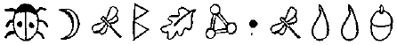

FOWL MALİKÂNESİ
HEATHROW'DAN geri dönüş, Gal tepelerinin üstündeki doğu rüzgârları ve bazı güçlü türbülanslardan dolayı bir saatten fazla sürdü. Holly ve Kâhya en sonunda Fowl Malikânesine indiklerinde LEP hafıza silme ekipmanını gece karanlığında ortaya yığmakla meşguldü.
Kâhya Aykemeriyle bağlantısını kesip bir huş ağacının gövdesine yaslandı.
“İyi misin?” diye sordu Holly.
“İyiyim,” diye karşılık verdi koruma, göğsüne mesaj yaparak. “Bunun nedeni şu Kevlar dokusu. Küçük kalibreli bir silahla vurulursanız işe yarıyor ama nefesimi berbat ediyor.”
Holly mekanik kanatlarını gizledi. “Artık sakin bir yaşantın olacak.”
Kâhya bir LEP pilotunun mekiğini çifte garaja sokarken Bentley’in tamponuna vurduğunu fark etti.
“Sakin bir yaşam mı?” diye mırıldandı, garaja doğru giderken. “Keşke.”
Kâhya pixie pilotu korkutmayı bitirdikten sonra çalışma odasına geldi. Artemis ve Juliet onu bekliyorlardı. Juliet abisini o kadar sıkı kucakladı ki ciğerlerindeki hava sıkıştı.
“Ben iyiyim, ufaklık. Periler öyle şeyler yaptılar ki yüz yaşını rahat geçerim. Hâlâ buralarda olup sana göz kulak olacağım.”
Artemis’in aklı işlerdeydi. “Nasıl gitti, Kâhya?”
Kâhya havalandırmanın arkasındaki duvar kasasım açtı.
“Oldukça iyi. Listedeki her şeyi yaptım.”
“Ya gümrük işi?”
Kâhya yeşil çuha kaplı masanın üstüne altı küçük şişe koydu.
“Limerick’deki adamım talimatlarını son harfine kadar uyguladı. Bu işte geçirdiği bu kadar yıla rağmen böyle hiçbir şey yapmamış. Paslanmayı engelleyen özel bir karışım içindeler. Tabakalar o kadar ince ki havayla temas eder etmez hemen okside olmaya başlayacaklar;1 bu yüzden son ana kadar onları içine sokmamamızı tavsiye ederim.”
“Harika. Bütün olasılıklarda, bunlara ihtiyacı olan tek kişi ben olacağım ama ne olur ne olmaz diye hepsini içeri koyalım.”
Kâhya altın parayı deri sırımından tuttu. “Günlüğünü ve peri günlüklerini bir mini lazer diske kaydettim, sonra bir tabaka altın kapladım. Korkarım, yakından incelemeye dayanamaz ama erimiş altın diskin üstündeki bilgiyi yok edecektir.”
Artemis sırımı boynuna bağladı. “Öyle olması gerekiyor. Sahte izleri bıraktın mı?”
“Evet. Henüz alınmamış bir e-posta yolladım ve internet birkaç megabaytlık bir hafıza kiraladım. Bir zaman kapsülünün labirentte gömülmesi için izin de aldım.”
Artemis başıyla onayladı. “İyi. Ben bunu düşünmemiştim.”
Kâhya bu iltifatı kabul etti ama inanmadı. Artemis her şeyi düşünürdü.
Juliet ilk kez konuştu. “Biliyor musun, Artemis. Belki de bu anıları unutmak daha iyi olacaktır. Perileri biraz rahat bırak.”
“Bu anılar benim kimliğimin bir parçası,” diye karşılık verdi Artemis.
Masanın üzerindeki küçük şişeleri inceledi ve iki tanesini seçti.
“Şimdi, millet, bunları içine koyma zamanı geldi. Peri Halkının hafızalarımızı silmeye hevesli olduğundan eminim.”
Foaly’nin teknik ekibi, karmaşık elektrot ve fıber-optik kablo yığınlarını yayarak konferans salonunda hazırlanmışlardı. Her kablo, beyin dalgalarını asıl ikili bilgi tabanına çevirecek plazma ekranlara bağlıydı. Meslektaşların deyişiyle, Foaly insanların hafızasını bir kitap gibi okuyabilir ve orada olmaması gereken şeyleri çıkarabilirdi. Bütün işlemin en inanılmaz bölümü insan beyninin boş yerleri doldurmak için alternatif anılar üretecek olmasıydı.
“Bir sahra donanımıyla hafıza silme yapabiliriz,” diye açıkladı Foaly, hastalar toplandığında. “Ama sahra donanımları sadece sınırsız silmelerdir. Son altı ayda olan her şeyi silerler. Duygusal gelişmenizde ciddi karışmalar olabilir, IQ’dan bahsetmiyorum bile. Bu yüzden, laboratuvar donanımını kullanmamız ve Peri Halkına ait olan anılarınızı silmek daha iyi olacaktır. Tabii ki perilerle geçirdiğiniz günleri tamamen silmemiz gerekiyor. Orada işi şansa bırakamayız.”
Artemis, Kâhya ve Juliet masanın etrafına oturmuşlardı. Teknisyen gnomelar insanların şakaklarını dezenfektanlarla silmişlerdi.
“Bir şey düşündüm,” dedi Kâhya.
“Dur söyleme,” diye araya girdi sentor. “Şu yaş hikâyesi, değil mi?”
Kâhya başıyla onayladı. “Birçok kişi beni kırk yaşında biliyor. Onların hepsinin hafızasını temizleyemezsin.” “Biz senden çok ilerideyiz, Kâhya. Sen baygınken yüzüne lazerle ameliyat edeceğiz. Ölü derilerin bir kısmından kurtulacaksın. Kırışıklıkları düzeltmek için alnına Dewer iğnesi yapacak bir plastik cerrah bile getirdik. “Dewer?”
“Yağ,” diye açıkladı sentor. “Bir yerden alıp diğer yere enjekte ediyoruz.”
Kâhya bu fikirden pek hoşlanmamıştı. “Bu yağ. Arkamdan gelmiyor, değil mi?”
Foaly’nin ali ayağına dolaştı. “Şey, senin arkandan gelmiyor.”
“Açıkla.”
“Araştırmalar bütün peri ırkları arasında en uzun yaşama sahip olanların cüceler olduğunu gösterdi. Poll Dyne’de bir madencinin iki bin yaşını geçtiği ileri sürülüyor. “Cüce kıçı gibi düz” deyimini hiç duymadınız mı?” Kâhya kafasına bir elektrot takmaya kalkan bir teknisyeni tokatlayarak uzaklaştırdı.
“Sen bana bir cücenin arkasından alman bu yağın kafama enjekte edileceğini mi söylüyorsun?”
Foaly omuz silkti. “Gençliğin bedeli. Batı kıyısında Dewer tedavisi için bir servet ödeyecek pixiler var.” Kâhya gıcırdattığı dişlerinin arasından konuştu. “Ben bir pixie değilim.”
“Yanımızda gelecekte çıkacak bütün kıllarını boyayacak bir jöle de getirdik. Ve de göğsündeki hücre bozunmasını örtmek için biraz pigment boyası,” diye hızla devam etti sentor. “Kendine geldiğinde içerisi yaşlı olsa bile dışarısı genç gözükecek.”
“Zekice,” dedi Artemis. “Bu kadarını bekliyordum.” Holly arkasında Mulch ile içeri girdi. Cücenin kelepçeleri vardı ve kendisi için çok üzgünmüş gibi görünüyordu.
“Bu gerçekten gerekli mi?” diye sızlandı. “Bütün bu beraber yaşadıklarımızdan sonra?”
“Tehlikede olan benim rozetim,” diye sertçe karşılık verdi Holly. “Kumandan ya seninle geri dönmemi ya da hiç dönmememi söyledi.”
“Ne yapmam gerekiyor? Yağ bağışında bulunan benim, değil mi?”
Kâhya gözlerini tavana dikti. “Lütfen, olamaz.”
Juliet kıkırdadı. “Merak etme, Dom. Bu konuda tek bir şey bile hatırlamayacaksın.”
“Beni bayıltın,” dedi Kâhya. “Çabuk.”
“Rica ederim önemli değil,” diye homurdandı Mulch, arkasını ovmaya çalışarak.
Holly cücenin kelepçelerini çözdü ama yakalama mesafesinde kaldı.
“Mulch hoşça kal demek istedi, bu yüzden buradayız.” Holly, Mulch’u omzuyla dürttü. “Hoşça kal de.” Juliet göz kırptı. “Hoşça kal, Kokuşmuş.”
“Elveda, Pis Kokulu.”
“Yanlışlıkla beton duvar çiğnemeye kalkma.”
“Böyle şeyleri gülünç bulmuyorum,” dedi Mulch, acılı bir ifadeyle.
“Kim bilir. Belki birbirimizi tekrar görürüz.”
Mulch, hard disklerini çalıştırmaya başlayan teknisyenlere başıyla işaret etti.
“Eğer karşılaşırsak bunlar sayesinde ilk kez olacak.”
Kâhya cücenin seviyesine diz çöktü.
“Kendine dikkat et, küçük dost. Goblinlerden uzak dur.” Mulch’un tüyleri ürperdi. “Bana bunu söylemen gerekmiyor.”
Bir LEP memurunun diktiği perde ekranda Yarbay Root’un yüzü belirdi.
“Belki ikiniz evlenmek istersiniz?” diye bağırdı. “Bütün bu duygusal ortamın nedenini anlamıyorum. On dikkat içinde bu suçlunun ismini bile hatırlamayacaksınız!”
“Kumandan hatta,” dedi bir teknisyen.
Mulch ekrana takılmış düğme kameraya dik dik baktı. “Julius, lütfen. Bütün bu insanların hayatlarım bana borçlu olduklarını görmüyor musun? Bu onlar için duygusal bir an.”
Root’un pembemsi ten rengi bu zayıf karşılıktan dolayı daha da koyulaştı.
“Sizin dokunaklı anlarınız benim pek umurumda değil. Ben silme işleminin düzgün gittiğinden emin olmak için buradayım. Eğer dostumuz Fowl’u tanıyorsam, kolunun yeninde gizlediği birkaç üçkâğıdı vardır.”
“Gerçekten, Yarbay,” dedi Artemis. “Böyle bir şüphe insanı yaralıyor.”
Ama İrlandalı çocuk sırıtışını bastıramadı. Kalan anıları canlandırmak için bir şeyler gizlediğini herkes biliyordu. Onları bulmak LEP’in işiydi. Bu onların son sınavları olacaktı.
Artemis ayağa kalktı ve Mulch Diggums’a yaklaştı. “Mulch. Bütün Peri Halkı içinde en çok seni özleyeceğim. Beraberce müthiş bir gelecek yaratabilirdik.” Mulch neredeyse ağlayacakmış gibi görünüyordu. “Doğru. Senin beynin ve benim özel yeteneklerim.” “Ortak ahlak eksikliğinden bahsetmeye bile gerek yok,” diye sokuşturdu Holly.
Artemis samimi görünmek için elinden geleni yaptı. Bu, planın bir sonraki aşaması için hayati bir önem taşıyordu.
“Mulch, Antonelli ailesine ihanet ederek yaşamını riske attığını biliyorum, bu yüzden sana bir şey vermek isterim.”
Mulch’un hayal gücü tröst tahvilleri ve offshore hesaplarla dolup taştı.
“Gerek yok. Gerçekten. Ne kadar müthiş cesur ve ölümcül tehlikede olmuş olsam da.”
“Kesinlikle,” dedi Artemis, boynundaki altın madalyonu boynundan çözerken. “Bunun fazla bir şey olmadığını biliyorum ama benim için çok anlamı var. Onun bende kalmasını istiyordum ama birkaç dakika sonrada benim için hiçbir manasının olmayacağını fark ettim. Onun sana vermek istiyorum; sanırım Holly de öyle istiyordur. Maceralarımızın bir anısı.”
“Hey,” dedi Mulch, madalyonu tartarak. “Altın. Harika. Oradaki bankaya gerçekten girmişsin, Artemis.”
Artemis cücenin elini yakaladı. “Her zaman para o kadar önemli değildir, Mulch.”
Root daha fazla görmek için boynunu eğiyordu. “O da ne? Suçluya ne verdi?”
Holly madalyonu çekip aldı.
“Sadece bir altın para, Yarbay. Onu Artemis’e ben vermiştim.”
Foaly küçük metale bir göz attı. “Aslında bu keskin kenarıyla iki koku solucanını öldürebilir. Bu madalyon kalan bazı anıları canlandırabilir. Pek olasılığı değil ama olabilir.”
“Ya diğer koku solucanı?”
“Mulch sadece hapishanede bakacak bir şey alıyor.” Root bunu birkaç saniye düşündü.
“Tamam. Onda kalabilir. Şimdi suçluyu mekiğe bindirin ve şu işe başlayalım. On dakika sonra bir Meclis toplantım var.”
Holly, Mulch’u dışarı çıkardı ve Artemis cücenin gidişini görmekten gerçekten üzüldüğünü fark etti. Ama ondan da önemlisi arkadaşlıklarının anısının sonsuza kadar kaybolacak olmasına üzülüyordu.
Teknisyenler bir hayvan ölüsünün üstündeki pireler gibi aniden üşüştüler. Birkaç saniye içinde odadaki insanların hepsinin şakak ve bileklerine elektrotlar takılmıştı. Her elektrot grubu bir sinir sistemi trafosundan geçip bir plazma ekranına giriyordu. Anılar ekranda titreşiyordu.
Foaly görüntüleri inceledi. “Çok önce,” diye belirtti. “Onları on altı ay önceye ayarla. Aslında şunu üç yıl yap. Artemis’in ilk peri kaçırmasını tekrar planlamasını istemiyorum.”
“Bravo, Foaly,” dedi Artemis, acı acı. “Bunu kaçırabileceğini umuyordum.”
Sentor göz kırptı. “Bütün kaçırmadığım bu değil.” Root’un piksellere bölünmüş ağzı perde ekranda gülümsedi.
“Ona söyle, Foaly. 0 insanın yüzünü biran önce görmek için dayanamıyorum. ”
Foaly el bilgisayarındaki bir dosyaya baktı.
“E-postana baktık ve bil bakalım ne bulduk?”
“Söyle.”
“Alınmayı bekleyen bir peri dosyası bulduk. İnternette genel bir araştırma yaptık. Bak, senin e-postana sahip olan biri megabaytlarca hafıza kiralamış. Başka peri dosyaları.”
Artemis hiç pişman görünmüyordu. “Denemem lazımdı. Anlayacağınızdan eminim.”
“Bize söylemek istediğin başka hiçbir şey yoktu mu?” Artemis tam bir masumiyet örneği gibi gözlerini açtı. “Hiçbir şey. Bana göre çok zekisiniz.”
Foaly bir alet kutusundan bir lazer disk alıp masanın üzerindeki ağdaki bir bilgisayarının sürücüsüne yerleştirdi. “Şey, ne olur ne olmaz, bilgisayar sistemine bir data saldırısı atıyorum. Bu virüs Peri Halkıyla ilgisi olmadıkları sürece dosyalarına zarar vermeyecek. Sadece bu kadar da değil, bizi bir şekilde kandırmış olma ihtimaline karşılık bu virüs sistemini altı ay daha gözlemleyecek.”
“Ye sen bana bütün bunları zaten hatırlamayacağım diye söylüyorsun.”
Foaly küçük bir dört adım atıp ellerini çırptı. “Kesinlikle.”
Holly kapıyı itip açtı, arkasından metalik bir kapsül sürüklüyordu.
“Bak yere gömülmüş ne buldum.” Kapağını açıp kapsülün içindekileri Tunus halısının üzerine döktü. Birkaç bilgisayar diski ve Artemis’in günlüğünün kopyaları halının üzerine yayıldı.
Foaly bir diski inceledi. “Bahsetmeyi unuttuğun başka bir şey mi?”
“Aklımdan çıkmış olmalı.”
“Sanırım bu kadar. Bu başka bir şey yok.”
Artemis iskemleye geri dönüp kollarını kavuşturdu. “Ve eğer evet dersem, bana inanacaksınız sanırım.”
“Ah, evet, Artemis. Sana tamamen güveniyoruz. Peri Halkının başına açtığın bu kadar şeyden sonra nasıl olur da güvenmeyiz? Eğer senin için bir sorun yoksa, hipnotize altında sana birkaç soru sormak istiyoruz ve bu kez güneş gözlüğü takıyor olmayacaksın.”
On altı ay önce, Artemis, Holly’nin hipnotize edici bakışından aynalı güneş gözlüğüyle kurtulmuştu. Bu, perileri kurnazlığıyla yendiği ilk seferdi. Sonuncusu da olmayacaktı.
“Peki o zaman, hadi başlayalım.”
“Yüzbaşı Short,” diye bağırdı Root. “Ne yapacağınızı biliyorsunuz.”
Holly miğferini çıkardı, kulaklarının ucuna masaj yapıp kan dolaşımını hızlandırdı.
“Şimdi seni hipnotize edeceğim ve birkaç soru soracağım. İlk defa hipnotize olmadığın için prosedürün acı verici olmadığını biliyorsun. Sana gevşemeni tavsiye ediyorum; eğer karşı koyarsan, bu hafıza kaybına ya da beyinin zarar görmesine neden olabilir.”
Artemis elini kaldırdı. “Bir dakika. Tekrar kendime geldiğimde bütün bu işin bittiğini düşünmekle haklı mıyım?”
Holly gülümsedi. “Evet, Artemis. Bu, son kez, hoşça kal.”
“İyi o zaman, söylemek istediğim birkaç şey var.” Root herşeye rağmen meraklandı. “Bir dakika, Fowl. Sonra iyi geceler.”
“Tamam. İlk olarak, teşekkür ederim. Dostlarım ve ailemin benimle olmasını Peri Halkına borçluyum. Keşke bunu unutmamış olsaydım.”
Holly elini onun omzuna koydu. “Böylesi daha iyi, Artemis. İnan bana.”
“Ve ikinci olarak, hepinizin benimle tanıştığın ilk seferi düşünmenizi istiyorum. O geceyi hatırladınız mı?” Holly’nin tüyleri ürperdi. Güney İrlanda’daki o büyülü yerde ona saldıran soğuk kişiyi hatırladı. Yarbay Root havaya uçan bir tankerden son anda kaçmayı asla unutamayacaktı. Foaly’in Artemis’i ilk görüşü Holly’nin salıverilmesi için yapılan pazarlığın kaydını yaparken olmuştu. O aşağılık bir yaratıktı.
“Eğer Peri Halkıyla olan anılarımı alırsan,” diye devam etti Artemis, “yine o kişi olabilirim. Gerçekten istediğin bu mu?”
Bu, kişinin içini donduran bir düşünceydi. Artemis'in değişiminden sorumlu olan Peri Halkı mıydı? Ve onu eski haline getirmekten de onlar mı sorumlu olacaklardı?” Holly ekrana döndü. “Bu mümkün mü? Artemis çok uzun bir yol kat etti. Bütün bu gelişmeyi yok etme hakkımız var mı?”
“Haklı,” dedi Foaly. “Bunu söyleyeceğimi asla düşünmemiştim ama bu yeni modelden bir şekilde hoşlanıyorum.”
Root ekranda başka bir bilgisayar penceresi açtı. “Psikoloji Cemiyeti bu olasılığı bize rapor etti. Eski haline dönme şansının az olduğunu söylüyorlar. Fowl hâlâ ailesi ve Kâhyalardan güçlü olumlu etkiler alacak.”
“Psikoloji Cemiyeti mi?” diye itiraz etti Holly. “Argon ve arkadaşları mı? Bu şarlatan doktorlara inanmaya ne zaman başladık?”
Root bağırmak için ağzını açtı ama daha iyisini düşündü. Böyle bir şey her gün olmuyordu.
“Holly,” dedi, neredeyse nazikçe. “Burada kültürümüzün geleceği tehlikede. Bundan ortaya çıkan sonuçta Artemis’in geleceği bizim sorunumuz değil.
Holly’nin ağzı acımasızca açıldı. “Eğer bu doğruysa, o zaman biz de Çamur Adamlar kadar kötüyüz.”
Kumandan her zamanki iletişim tarzına geçmeye karar verdi.
“Dinle beni, Yüzbaşı,” diye bağırdı. “Komuta etmek sert kararlar almak demektir. Komuta etmek sesini kesip söyleneni yapmak demek değildir. Şimdi bağlantıyı kaybetmeden önce bu insanları hipnotize et.”
“Emredersiniz, efendim. Nasıl isterseniz, efendim.” Holly, Artemis’in önünde durdu, göz teması yapmaya dikkat ediyordu.
“Hoşça kal, Holly. Seni bir daha görmeyeceğim ama senin beni göreceğinden eminim.”
“Gevşe, Artemis. Derin nefes al.”
Holly tekrar konuştuğunda, sesi bas ve alto arasında bir yerdeydi. Bu hipnotize etme boyutuydu.
“Spiro’yla sıkı bir iş yaptık, değil mi?”
Artemis uyur gibi gülümsedi. “Evet. Son macera. Artık insanlara zarar vermeyecek.”
“Bu planları nereden buldun?”
Artemis’in dudağı aşağı düştü. “Doğal yetenek, sanırım. Fowllarda kalıtsal olarak nesilden nesle geçer.” “Peri anılarından kopmamak için elinden geleni yapacağına iddiaya girerim.”
“Neredeyse her şeyi.”
“Peki ne yaptın?”
Artemis gülümsedi. “Birkaç küçük şeytanlık yaptım.” “Bunlar nasıl şeytanlıklar?” diye zorladı Holly.
“Bu bir sır. Sana söyleyemem.”
Holly sesinin gücünü biraz daha arttırdı.
“Söyle bana, Artemis. Bu bizim sırrımız olacak.” Artemis’in şakağındaki bir damar attı. “Söylemeyecek misin? Perilere söylemeyecek misin?”
Holly suçlu suçlu ekrana göz attı. Root devam diye işaret etti.
“Söylemeyeceğim. Bu sadece aramızda kalacak.” “Kâhya labirente bir kapsül sakladı.”
“Başka?”
“Ben kendime bir e-posta yolladım. Ama Foaly’nin bunu bulmasını bekliyorum. Bu onun dikkatini dağıtmak için.”
“Çok zekice. Onun bulmasını istemediğin başka bir şey var mı?”
Artemis kurnazca gülümsedi. “Bir İnternet servis sağlayıcısının sitesine bir dosya sakladım. Foaly’nin data virüsü onu etkilemeyecek. Site altı ay sonra bana hatırlatıcı bir e-posta yollayacaklar. O bilgiyi aldığımda kalan anılar harekete geçecek ve büyük ihtimalle bütün hafıza tekrar yerine gelecek.”
“Başka bir şey?”
“Hayır. Servis sağlayıcı sitesi son şansımız. Eğer sentor onu bulursa, o zaman peri dünyası sonsuza kadar kaybolacaktır. ”
Root’un görüntüsü ekranda belirdi. “Tamam. Yukarıyla sinyal bağlantısı kesiliyor. Filmin tamamını görene kadar Artemis’in devre dışı kaldığına inanmayacağım.” “Yarbay. Belki diğerlerine de birkaç soru sormalıyım.” “Gereksiz, Yüzbaşı. Fowl’un kendisi bunu söyledi. Servis sağlayıcı sitesi onların son umuduydu. Onları bağla ve programı çalıştır.”
Kumandanın görüntüsü parazit dalgaları arsında kayboldu.
“Emredersiniz, efendim.” Holly teknik ekibe döndü. “Perinin dediğini duydunuz. Hadi başlayalım. Güneş birkaç saat sonra doğacak. Ondan önce yeraltına dönmemizi istiyorum.”
Teknisyenler elektrotların sağlam bağlanıp bağlanmadıklarını kontrol ettiler, sonra üç uyku gözlüğü çıkardılar. “Bunu ben yapacağım,” dedi Holly, maskeleri alarak. Lastiği Juliet’in atkuyruğunun üstünden geçirdi. “Biliyor musun?” dedi. “Özel korumalık soğuk bir meslek. Sen bu iş için çok duygusalsın.”
Juliet yavaşça başıyla onayladı. “Bu düşünceyi unutmamaya çalışacağım.”'
Holly göz parçalarını nazikçe yerleştirdi.
“Gözümü senden ayırmayacağım.”
Juliet gülümsedi. “Rüyalarımda görüşürüz.”
Holly uyku maskesinin üzerindeki küçük bir düğmeye bastı; göz parçalarındaki hipnoz-ışıkları ve bağlantı yerlerinden verilen uyku ilacı karışımı Juliet’i beş saniye geçmeden bayılttı.
Sırada Kâhya vardı. Teknik ekip, kazınmış kafasına oturabilsin diye maskenin kayışına elastik bir ek yapmıştı.
“Foaly’nin hafıza silme işleminde saçmalamamasına dikkat et,” dedi koruma. “Hafızamda kırk yıllık bir boşlukla kendime gelmek istemem.”
“Merak etme,” dedi Holly, onu temin edercesine. “Foaly genelde ne yaptığını bilir.”
“İyi. Aklında olsun, eğer Peri Halkının yardıma ihtiyacı olursa ben her zaman hazırım.”
Holly düğmeye bastı.
“Bunu hatırlayacağım,” diye fısıldadı.
Artemis sıradaki en son kişiydi. Hipnotize durumunda neredeyse sakin görünüyordu. Bir kere de olsa, kaşlarının üzerinde düşünme çizgileri yoktu ve eğer onu tanımıyorsanız neredeyse normal bir on üç yaşında insan olabilirdi.
Holly, Foaly’e döndü. “Bundan emin misin?”
Sentor omuz silkti. “Başka ne seçeneğimiz var? Emir emirdir.”
Holly maskeyi Artemis’in gözlerinin üzerine yerleştirdi ve düğmeye bastı. Birkaç saniye sonra çocuk iskemlesinin üstüne yığıldı. Hemen, Gnomeca yazılmış bir metin arkasındaki ekrandan hızla geçmeye başladı. Frond döneminde Gnomeca spiraller halinde yazılırdı. Ama onu spiraller halinde okumak çoğu peride migren ağrısı yapardı.
“Silme başlasın,” diye emretti Foaly. “Ama bir kopya saklayın. Birkaç hafta boş vaktim olduğunda bu çocuğu bu kadar kaim kafalı yapan şeyin ne olduğunu bulacağım.”
Holly, Artemis’in hayatının ekranda yeşil sembollerle yazılmasını izledi.
“Bu bana doğruymuş gibi gelmiyor,” diye yorum yaptı. “Bizi bir kere bulduysa, yine bulabilir. Özellikle de bir zamanlar olduğu o canavar haline dönerse.”
Foaly ergonomik bir klavyedeki tuşlara bastı. “Belki. Ama bir dahaki sefere hazırlıklı olacağız.”
Holly iç çekti. “Yazık çünkü artık neredeyse dost olmuştuk.”
Sentor kişnedi. “Doğru. Bir engerekle nasıl dost oluyorsan öyle.”
Holly aniden siperliğini örtüp gözlerini gizledi.
“Tabii ki haklısın. Asla dost olamazdık. Bizi birleştiren koşullardı, başka bir şey değil.”
Foaly onun omzunu okşadı. “İşte bu bizim kız. Kulaklarını aç. Neredeyse gidiyorsun?”
“Tara’ya,” diye karşılık verdi Holly. “Uçacağım. Temiz havaya ihtiyacım var.”
“Bir uçuş için iznin yok,” diye itiraz etti Foaly. “Root rozetini alacak.”
“Ne için?” dedi Holly, kanatlarını açarak. “Hatırlıyor musun, benim burada olmamam gerekiyor.”
Ve giriş salonundan havalanıp ağır ağır uçtu. Ana kapıyı birkaç santimetreyle ıskalayıp hızla karanlık gökyüzüne tırmandı. Bir anda zarif figürü dolunayın üstünde arkasından aydınlandı ve ardından görünen tayftan yok oldu.
Foaly onun gitmesini izledi. Elfler duygusal yaratıklardı. Bazı açılardan Recon’un en kötü adamlarıydı. Bütün kararlar duygusal alınırdı. Ama Root asla Holly’i işten atamazdı çünkü elf polis olmak için doğmuştu. Ve zaten eğer Artemis onları tekrar bulursa Peri Halkını kim koruyacaktı?
Mulch mekiğin tutuklu bölmesinde oturmuş aşırı seviyede kendine acıyordu. Nazik arkasıyla tam dokunmadan sıraya oturmaya çalışmıştı. Bu kolay bir iş değildi.
Gidişatın iyi görünmediği söylenebilirdi. LEP için bütün yaptıklarına rağmen onu en az on yıl için hapse atacaklardı. Sadece birkaç önemsiz altın külçesini çaldığı için. Ve olası bir kaçma fırsatı yokmuş gibi görünüyordu. Çelik ve lazer parmaklıklarla çevrilmişti; Haven’a inene kadar burada böyle kalacaktı. Ondan sonra Polis Plaza’ya hızlı bir gezi, kısa bir duruşma ve sakalı beyazlayana kadar güvenli bir tesise kapatılma. Beş yıldan fazla tünellerden uzak kalırsa zorunlu olarak beyazlama başlayacaktı.
Ama bir umut vardı. Minnacık bir donuk ışık. Mulch teknik ekip malzemelerini mekikten çıkana kadar beklemek için kendini zorladı. Sonra öylesine sağ elini açıp şakaklarını baş ve işaret parmağıyla ovdu. Aslında yapmaya çalıştığı avucundaki, el sıkışırlarken Artemis Fowl’un ona gizlice verdiği minik notu okumaktı.
Seninle işim henüz bitmedi, Mulch Diggums-
diye notu okudu. Dönüşünde avukatına davanla
ilgili en son orijinal arama emrinin gününü kontrol
etmesini söyle. Serbest Bırakıldığında birkaç yıl
burnunu kirli işlere sokma. Sonra madalyonu
bana getir. Beraber bizi hiç kimse durduramayacak,
Hayırsever dostun
İkinci Artemis Fowl
Mulch notu buruşturdu. Parmaklarıyla bir silindir yaptı ve kağıdı ağzına soktu. Cüce azı dişleri delili çabucak yok etti.
Mulch burnundan derin bir nefes aldı. Skaylian Kaya Solucanı Şarabının mantarını çıkarma zamanı henüz gelmemişti. Davasının yeniden incelenmesi aylar, büyük ihtimalle yıllar alabilirdi. Ama umut vardı.
Cüce, Artemis’in madalyonunu sıkıca parmakların arasına aldı. Beraber olunca hiç kimse onları durduramayacaktı.